LAS PERSONAS Y NUESTRA HISTORIA
Descubrí de dónde venimos, quiénes forman parte y qué valores compartimos.
DIFERENTES MUNDOS. UNA MISMA LEGIÓN.
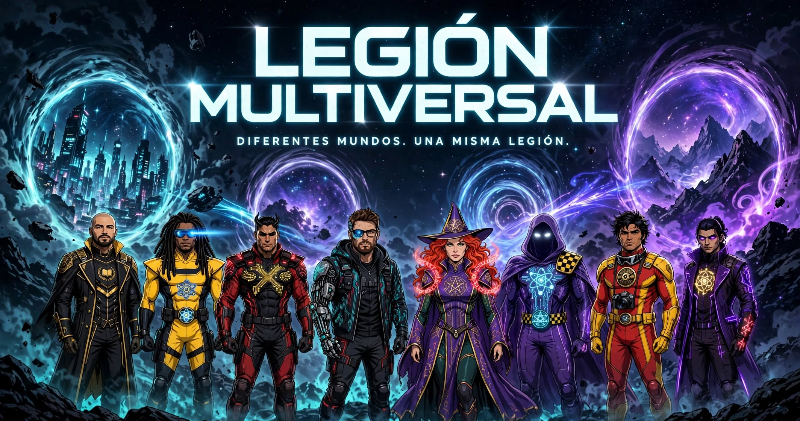
ARCHIVO CENTRAL · PRESENTACIÓN INSTITUCIONAL
Una comunidad de creadores que conecta gaming, entretenimiento, tecnología y nuevas experiencias. Cada integrante conserva su identidad; juntos construimos algo más grande.
Tres caminos para conocer quiénes somos, descubrir lo que hacemos y encontrar tu forma de participar.
Descubrí de dónde venimos, quiénes forman parte y qué valores compartimos.
Conocé nuestras actividades, juegos y colaboraciones documentadas.
Explorá nuestra actividad y encontrá el canal adecuado para acercar una propuesta.
Cuatro creadores. Cuatro canales. Una misma partida.
Una experiencia colaborativa transmitida desde cuatro canales de Twitch, conservada en VOD y clips. El expediente reúne participantes, registros audiovisuales y métricas con sus fuentes y limitaciones.
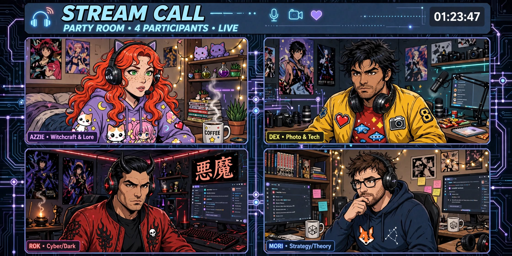
Somos personas con recorridos, intereses y talentos diferentes que eligieron compartir partidas, ideas y proyectos. La Legión existe porque cada identidad aporta algo propio a una comunidad común.
Diseñamos experiencias que se adaptan al proyecto, a los creadores participantes y a los objetivos acordados.
Presencia de marca, menciones y demostraciones durante transmisiones.
Partidas, eventos y desafíos compartidos entre distintos creadores.
Piezas breves y momentos destacados que prolongan cada experiencia.
Dinámicas participativas alineadas con cada comunidad y campaña.
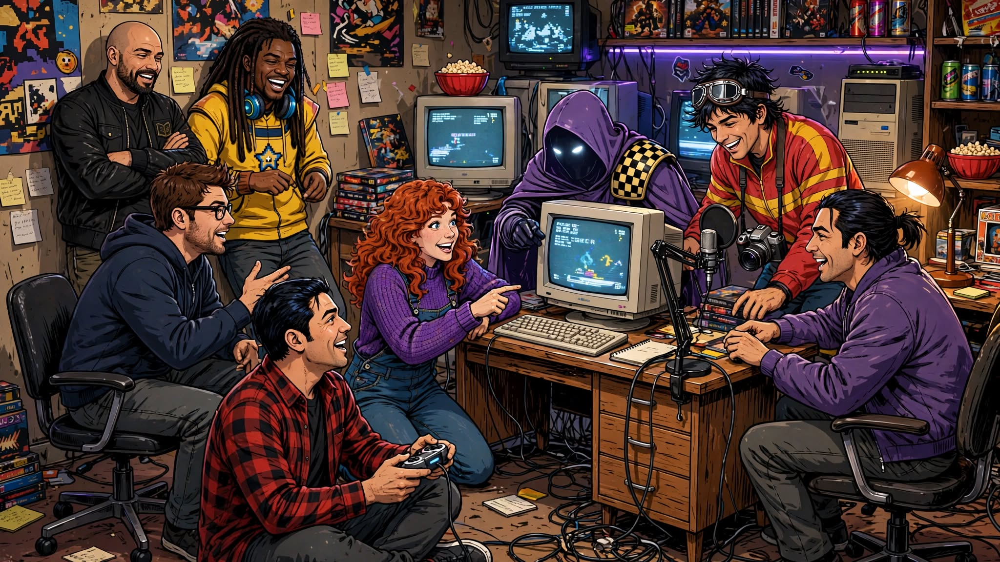
No borramos nuestro pasado: lo reconocemos como el comienzo de una historia que continúa creciendo.
Agencias, publishers, estudios, marcas y colaboradores pueden acercarnos sus proyectos y propuestas.
CONTACTAR A LA LEGIÓN ↗ARCHIVO CENTRAL · LEGIÓN MULTIVERSAL
No nacimos como una gran organización. Nacimos jugando, compartiendo directos y descubriendo que, cuando las personas correctas se encuentran, pueden construir algo mucho más grande que una colaboración.
Una idea compartida, una primera llamada y un grupo que empezó a descubrir lo que podía construir unido.
Antes de que existieran un nombre, un emblema o una formación, hubo una noche de ideas frente a las computadoras. Demi y Roderik compartieron esa primera visión y comenzaron a imaginar un espacio propio: un equipo que pudiera reunir personas, jugar, crear y crecer en compañía. No fue la historia de una sola persona; fue una idea que tomó fuerza porque dos amigos decidieron ponerla en marcha juntos.

Roderik hizo el primer llamado a Akuma, su amigo íntimo, para invitarlo a formar parte de aquella aventura. En paralelo, Demi convocó a Lady Moriarty, su compañera de camino en Los Moriartys, y a Patricio, que también se sumó al proyecto desde su lugar de colaborador. Cada invitación abrió una puerta distinta y ayudó a que la idea dejara de ser solamente una conversación.
Con el primer núcleo en movimiento, Demi y Roderik se pusieron a buscar a Ardipii. La búsqueda no consistía solo en sumar un nombre: querían encontrar personas con las que compartir partidas, construir confianza y darle personalidad a aquella primera formación. Así empezó a tomar identidad el proyecto que conoceríamos como S3X-MEN.
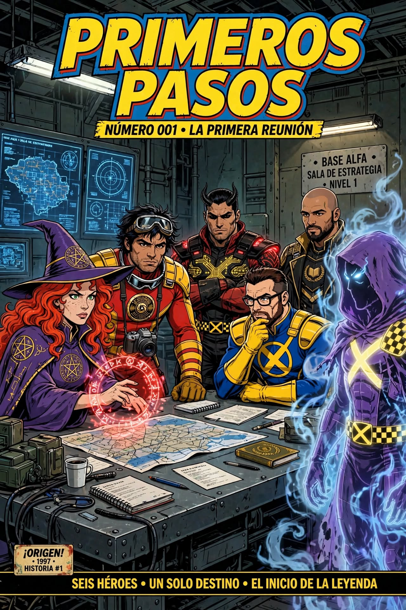
La historia siguió creciendo. Dave se incorporó como estudiante, aportando su propia identidad al equipo, y Hábitos encontró su lugar como colaborador. No todos llegaron con la misma función ni recorrieron el mismo camino: lo importante fue que cada incorporación sumó una pieza distinta a una comunidad que ya estaba en movimiento.
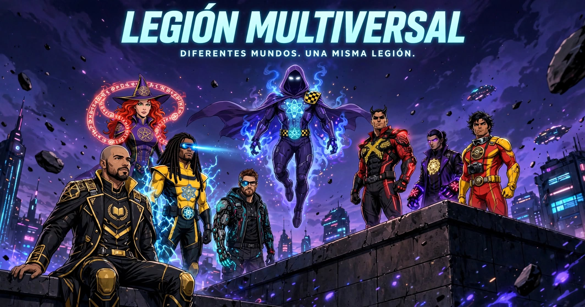
S3X-MEN fue el punto de partida. La Legión Multiversal es la expansión de todo lo que empezamos a construir.
Demi y Roderik ponen en marcha una visión común y empiezan a convocar a las primeras personas que formarían parte del proyecto.
Las invitaciones, las partidas y la búsqueda de nuevos compañeros convierten aquella idea en una primera identidad de equipo.
Se incorporan nuevas personas y funciones. Estudiantes y colaboradores aportan distintas capacidades sin perder su identidad individual.
Las partidas y los directos abren paso a una propuesta que también busca conectar creadores, acompañar proyectos y generar oportunidades entre comunidades.
El proyecto adopta una identidad capaz de reunir más mundos, disciplinas e iniciativas. La nueva etapa no borra a S3X-MEN: reconoce el origen y continúa su recorrido.
El primer gran paso de la Legión no fue dejar atrás a S3X-MEN, sino reunir todo lo que habíamos construido y presentarnos como un equipo más amplio. La misión fue conectar nuestros distintos mundos, talentos y comunidades bajo una identidad común, sin que nadie tuviera que dejar de ser quien es.
Esta formación representa ese compromiso: jugar, crear, colaborar y abrir nuevas historias juntos. No es el final de nuestro origen; es el comienzo de nuestra primera aventura como Legión.
.jpg)
El talento no tiene una sola forma. Conectamos entretenimiento, conocimiento y crecimiento personal para construir una comunidad donde cada persona pueda aportar desde su especialidad.
Videojuegos, streaming, eventos, experiencias cooperativas y creación de contenido para compartir momentos memorables.
Programación, herramientas digitales, innovación, aprendizaje y experiencias que ayudan a ampliar nuestras capacidades.
Filosofía, motivación, hábitos, reflexión y conversaciones que también nos hacen crecer fuera de la pantalla.
UNA IDENTIDAD ABIERTA: cada integrante puede conectar con más de una dimensión. No son compartimentos cerrados, sino distintas formas de sumar al equipo.
04 / CAMBIO DE ERA
S3X-MEN FUE NUESTRO ORIGEN.
La transformación no fue un borrón y cuenta nueva. Fue el paso de una primera formación de cuatro personas a una comunidad creativa con más integrantes, disciplinas y posibilidades. La Legión conserva el espíritu de aquel comienzo y lo proyecta hacia nuevos mundos.
No buscamos que todos hagan lo mismo. Buscamos que cada persona aporte algo propio.
DIFERENTES MUNDOS. UNA MISMA LEGIÓN.05 / LOS PROTAGONISTAS
Los expedientes visuales de cada integrante están reunidos en el Capítulo 03. Allí vas a encontrar a cada héroe una sola vez, presentado dentro de su marco oficial y con acceso a su ficha completa.
Una comunidad, múltiples perfiles y distintas posibilidades de colaboración. Actualmente reunimos 8 perfiles y 7 canales activos de Twitch, además de propuestas de contenido en otros formatos.
Explorá las cartas de la Legión, filtrá por especialidad o plataforma y abrí cualquier expediente directamente. Cada creador conserva su identidad y su espacio propio.
Somos una red de creadores con canales, estilos y comunidades propias. Acá mostramos actividad que podemos respaldar, experiencias que construimos juntos y el alcance que estamos desarrollando.
Indicadores del roster activo a partir de las consultas registradas. Los datos se actualizan automáticamente cuando se renueva el archivo de actividad.
Una ficha por canal del roster, con estado actual y métricas observadas. Estar offline no significa que el canal esté fuera del seguimiento.
Cargando canales registrados…
Actualizaciones verificadas del proyecto y del trabajo compartido. Cada entrada conserva su fecha y una fuente para consultar el detalle.
Cargando novedades del archivo…
Las colaboraciones reúnen creadores y comunidades alrededor de una misma experiencia. Cada expediente conserva participantes, transmisiones, clips y métricas con su contexto.
Una marca puede conocer el canal compartido, evaluar perfiles individuales o explorar una acción multicanal. La propuesta se define según el objetivo, la disponibilidad y los datos verificables.
La actividad de Twitch se obtiene de Twitch Helix mediante data.json. El sistema consulta los canales de forma programada y conserva una ventana móvil máxima configurada. La cobertura efectiva depende de la antigüedad y continuidad de la recolección; no se interpreta la ventana configurada como un período completo de datos.
La cobertura de la última captura se informa según los canales esperados, resueltos y omitidos por el colector. Los directos detectados y las muestras en directo se cuentan a partir de los registros por canal.
Las métricas de otras plataformas se mantienen separadas por creador y plataforma. No se suman seguidores, vistas ni audiencias de servicios distintos como si fueran una misma unidad. Streams Charts se incorpora como fuente de referencia para análisis del roster cuando existan datos verificables y comparables.
| Canal | Estado | Espectadores actuales | Categoría | Promedio observado | Pico observado | Horas observadas | Muestras | Cobertura del intervalo muestreado |
|---|---|---|---|---|---|---|---|---|
| Cargando estadísticas… | ||||||||
Una Legión no se construye sumando nombres. Se construye cuando personas distintas eligen avanzar juntas.
Su voz, su humor, sus intereses, sus tiempos y su manera de crear. No queremos borrar esas diferencias: queremos que convivan. Legión Multiversal es un espacio para compartir videojuegos, entretenimiento, ideas y proyectos sin tener que dejar de ser quien sos.
No pedimos que copies un molde. Valoramos las ideas, el estilo y la personalidad que cada integrante trae consigo.
Nos damos una mano, reconocemos el trabajo ajeno y entendemos que el crecimiento de otro integrante también puede fortalecer al conjunto.
Escuchar, cuidar los espacios compartidos y respetar límites, tiempos y diferencias es la base para crear juntos.
Las buenas ideas pueden venir de cualquier integrante. Queremos experimentar, proponer y probar formatos sin perder autenticidad.
Compartimos aprendizajes, experiencias y oportunidades. Cada avance individual suma cuando se construye con generosidad.
Comunicamos con claridad lo que hacemos, qué acuerdos existen y qué resultados podemos respaldar. La confianza no se negocia.
No prometemos fama, contratos ni crecimiento automático. Ofrecemos una cultura de colaboración, respeto y trabajo compartido, donde cada persona pueda aportar desde su propio lugar.
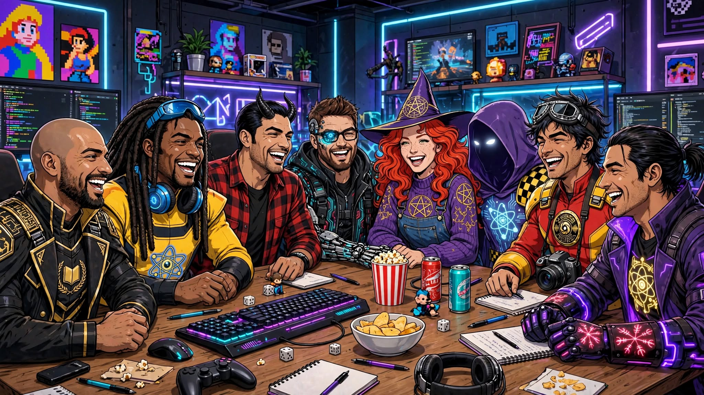
Distintas historias, juegos y formas de crear. Nos une la curiosidad, las ganas de compartir y el respeto por lo que cada persona aporta.
Podés llegar para descubrir un canal, quedarte por una partida, proponer una idea o encontrar personas con quienes crear algo nuevo. La Legión se construye con participación real, no con una lista de nombres.
Explorá quiénes somos, qué juega cada integrante y qué propuestas conviven dentro del roster. Cada creador mantiene su canal y su personalidad.
Acompañá los directos, compartí ideas, sugerí juegos y sumate a los encuentros cuando se anuncien. Las actividades se comunican cuando están confirmadas.
Si creás contenido y te interesa colaborar, conocé cómo presentar tu perfil. No necesitás copiar el estilo de nadie: queremos conocer tu propia voz y lo que podrías aportar.
Una comunidad crece cuando hay lugar para nuevas voces.
Cuando uno o más integrantes estén transmitiendo, vas a poder elegir un canal y verlo directamente desde esta página. La disponibilidad se actualiza a partir de las consultas programadas del sistema.
Consultando el estado de los canales…
El reproductor oficial de Twitch requiere conexión a internet y un navegador compatible. En GitHub Pages se utiliza el dominio publicado como parámetro de inserción; si abrís una copia local, Twitch puede bloquear la reproducción.
LEGIÓN MULTIVERSAL · CREDENCIALES Y OPORTUNIDADES
Una red de creadores. Distintas credenciales. Una propuesta compartida.
Legión Multiversal reúne creadores con trayectorias, plataformas y experiencias diferentes. Combinamos capacidades individuales y trabajo colaborativo para desarrollar experiencias de contenido junto a estudios, publishers, agencias y marcas.
Reconocimientos vinculados al proyecto y al canal compartido de Los Moriartys.
Los Moriartys figura como Partner Creator de Cinderia y Enshrouded dentro de Lurkit. Esta participación corresponde al canal compartido y constituye una credencial dentro del ecosistema creator.
Información confirmada por el equipo. No implica, por sí sola, un patrocinio económico ni una campaña remunerada.
Código informado para el canal compartido. La activación todavía no fue confirmada.
Las acreditaciones personales pertenecen a cada creador y a su canal. No se atribuyen automáticamente a toda la Legión.
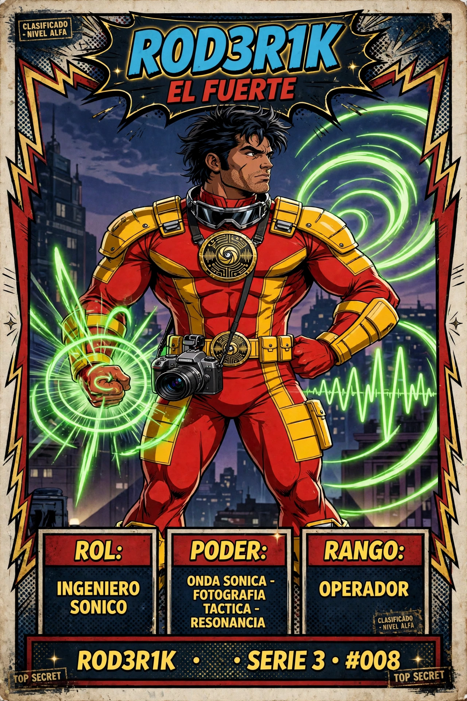
Reconocimiento correspondiente a su canal individual de Twitch.
Servicios que pueden facilitar el descubrimiento de oportunidades, la gestión de solicitudes o la participación en programas.
Programas para creadores, campañas y oportunidades vinculadas a videojuegos. La participación en una plataforma no equivale a un patrocinio de esa plataforma.
SITIO OFICIAL ↗Herramienta del ecosistema creator para descubrir campañas y gestionar solicitudes de acceso a juegos.
SITIO OFICIAL ↗Programa Support-A-Creator y códigos de creador. Los códigos identifican a sus titulares; no acreditan un patrocinio económico.
INFORMACIÓN DEL PROGRAMA ↗La utilización de estas herramientas no implica una alianza comercial con sus propietarios. Cada campaña, acceso o beneficio se comunica de acuerdo con sus condiciones reales.
Cuatro formatos para diseñar experiencias con estudios, publishers, agencias y marcas. Cada propuesta se adapta a sus objetivos y a las capacidades disponibles.
Presencia visual de marca, menciones naturales, demostraciones y participación durante una transmisión.
Partidas cooperativas, eventos compartidos, desafíos y experiencias coordinadas entre creadores.
Momentos destacados, piezas breves y publicaciones posteriores para extender la conversación más allá del directo.
Dinámicas participativas, desafíos, encuentros y sorteos cuando estén autorizados y acordados.
Los formatos son posibilidades de colaboración, no campañas contratadas ni servicios garantizados. Integrantes, recursos, alcance y entregables se definen para cada propuesta.
Las credenciales muestran trayectorias. Los expedientes documentan cómo trabajamos en equipo.
Cuatro creadores. Cuatro canales. Una misma experiencia. Una sesión coordinada con registros de transmisión, VOD y métricas documentadas en su expediente.
Se presenta como experiencia compartida documentada, no como patrocinio remunerado.
Las acreditaciones publicadas identifican programas, plataformas o reconocimientos de cada creador. No representan automáticamente patrocinios económicos, contratos, pagos ni campañas comerciales.
Las oportunidades se evalúan individualmente. Sus entregables, condiciones, compensaciones y fechas se acuerdan con cada marca o publisher antes de su ejecución.
Desarrolladores, publishers, agencias y marcas pueden acercar propuestas de campañas, cobertura, accesos anticipados o activaciones con la comunidad.
Para evaluar una propuesta, compartí la marca o juego, objetivos, fechas, plataformas, entregables esperados y presupuesto disponible.
losmoriartys@gmail.com ↗Las colaboraciones son parte de nuestra historia. Este archivo registra partidas compartidas, directos simultáneos, eventos y proyectos en los que los integrantes de la Legión unen sus comunidades para crear algo en común.
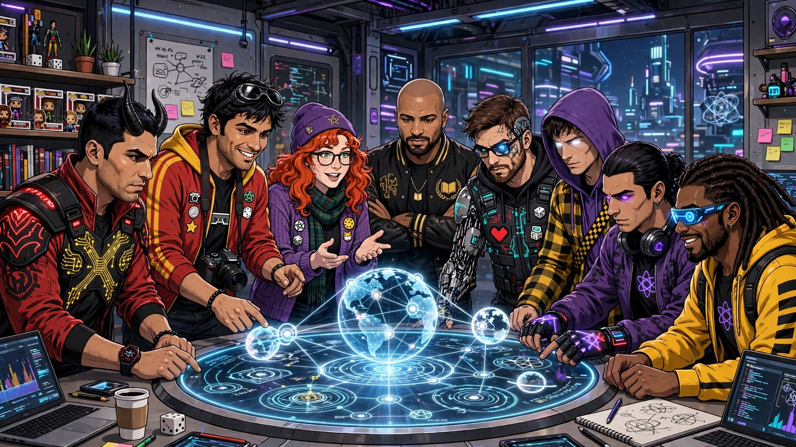
Cada expediente conserva quiénes participaron, qué hicieron, dónde se transmitió, qué contenido quedó registrado y qué resultados pueden respaldarse. Las cifras individuales y compartidas se presentan por separado para que cada dato tenga contexto.
Visibilidad para cada integrante y su canal.
VOD, clips y momentos que prolongan la experiencia.
Distintas audiencias reunidas alrededor de una actividad común.
Métricas con fuente, período y alcance identificados.
Cuatro creadores. Cuatro canales. Una misma partida.
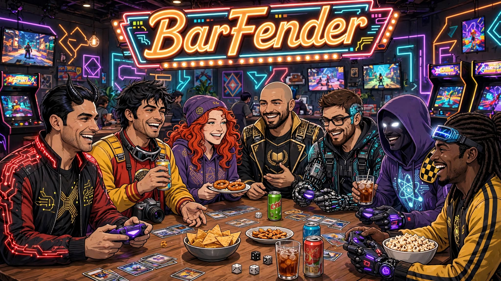

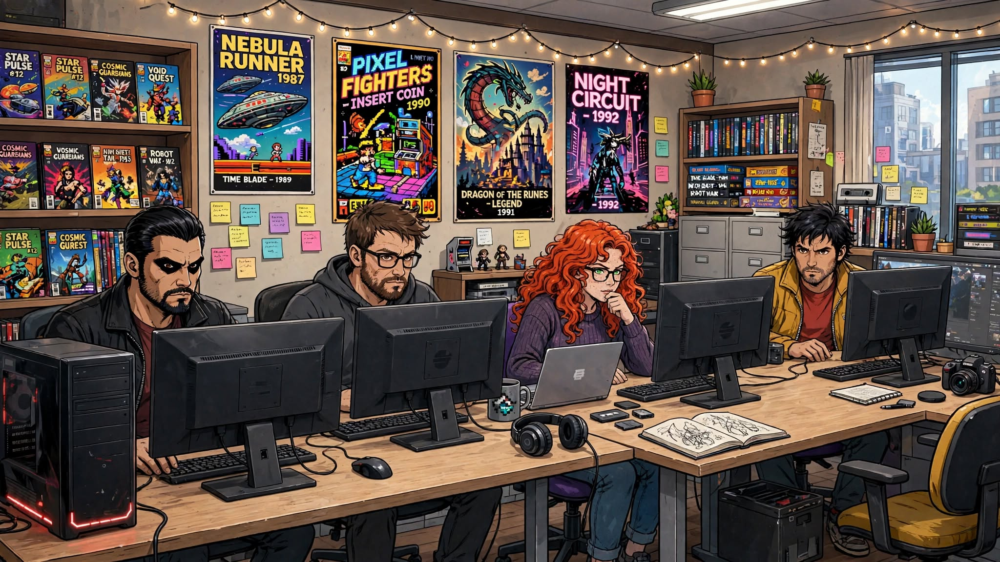
El 5 de noviembre de 2026, Demian, Lady Moriarty, Rod3rik y Akuma se reunieron para jugar BarFender y colaborar en directo desde sus propios canales de Twitch. La actividad compartida se extendió durante aproximadamente una hora y media.
La propuesta permitió mostrar una misma experiencia desde cuatro comunidades y estilos de transmisión, generar interacción entre creadores y conservar momentos destacados para seguir difundiendo la actividad después del directo.
Juego: BarFender
Publisher: Rock Paper Publisher
Desarrollador: Proto Division
Acceso al juego: facilitado mediante Keymailer.
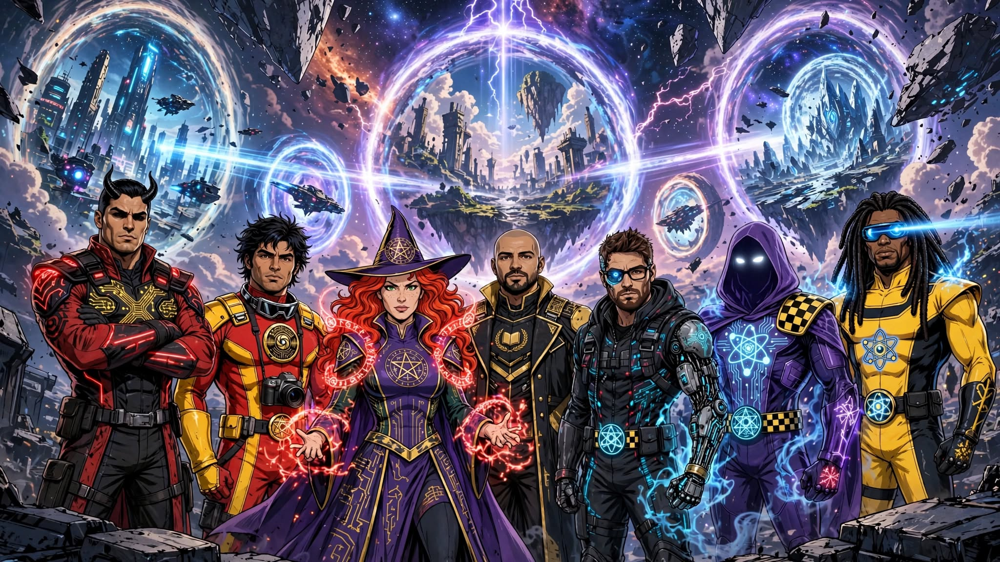
* Los 98 espectadores compartidos únicos corresponden al panel Twitch Shared Viewership del canal Los Moriartys. No representan una deduplicación global de la audiencia de los cuatro canales ni deben sumarse a los espectadores únicos individuales.
Datos del VOD completo del 5/11/2026. Estas métricas corresponden a toda la transmisión, no exclusivamente al tramo de BarFender.
Fuente: estadísticas del directo de Los Moriartys y panel Twitch Shared Viewership. El VOD completo tuvo una duración de 2:27:20. El indicador de 98 espectadores compartidos únicos se conserva como dato independiente del panel y no equivale a espectadores únicos deduplicados de toda la campaña.
Se localizaron tres VOD públicos. Akuma participó en simultáneo, pero no se localizó un VOD público para incorporar al archivo.
Ocho momentos conservados con su título y canal de origen. Cada tarjeta funciona como portada de archivo y abre el clip original en Twitch; el avatar identifica el perfil oficial del canal. Las portadas son gráficas editoriales, no fotogramas extraídos de los videos.
 LOS MORIARTYS · CLIP 01LOS MORIARTYS · CLIP 02
LOS MORIARTYS · CLIP 01LOS MORIARTYS · CLIP 02En @TheR0D3R1k, @Akumazoldyck y @LadyMoriarty01 · #BarFender
LEGIÓN MULTIVERSAL ARCHIVO 02 REGISTRO ORIGINAL VER EN TWITCH ↗ LADY MORIARTY01 · CLIP 01LADY MORIARTY01 · CLIP 02LADY MORIARTY01 · CLIP 03LADY MORIARTY01 · CLIP 04
LADY MORIARTY01 · CLIP 01LADY MORIARTY01 · CLIP 02LADY MORIARTY01 · CLIP 03LADY MORIARTY01 · CLIP 04 THER0D3R1K · CLIP 01THER0D3R1K · CLIP 02
THER0D3R1K · CLIP 01THER0D3R1K · CLIP 02Cuatro creadores pudieron organizar una actividad compartida y emitirla desde sus canales individuales.
Una misma experiencia generó perspectivas, reacciones y momentos diferentes para cada comunidad.
Los VOD y los ocho clips identificados permiten conservar y prolongar la vida del contenido.
La actividad ofrece un ejemplo concreto de colaboración entre creadores sin borrar la identidad de cada canal.
Transparencia: esta ficha documenta una sesión colaborativa con acceso al juego facilitado mediante Keymailer. No se presenta como patrocinio remunerado ni se atribuyen ventas, conversiones o ROI. Las métricas se muestran con su fuente y alcance; los 98 espectadores compartidos únicos no son una cifra global deduplicada de los cuatro canales.
La próxima bitácora podrá documentar otro juego, evento, encuentro, directo conjunto o proyecto comunitario. Cada experiencia tendrá su propio expediente y conservará el registro de quienes la hicieron posible.
Podemos conversar sobre experiencias multicanal, contenido cooperativo y activaciones con creadores.
CONTACTAR A LA LEGIÓN ↗Este es el repertorio de experiencias que proponemos para reunir al roster y a la comunidad: competir, cooperar, improvisar y crear momentos que valga la pena recordar.
La selección combina fiesta, deducción social, terror, supervivencia y construcción. No es un ranking ni una lista cerrada: es un punto de partida para nuestras próximas sesiones.
Cada juego abre una dinámica distinta. Elegí una portada para conocer la propuesta y consultar su tienda oficial.

Escuchá un sonido y reproducilo con tu voz: todos imitan al mismo tiempo y la ronda se convierte en una competencia de ocurrencias, imitaciones y sabotajes. Ideal para que el chat también se divierta con las reacciones.
Jugadores: 1–5 online.
Ver en Steam ↗
Pintate para copiar los colores del escenario, encontrá el escondite perfecto y tratá de pasar desapercibido. Una propuesta visual, rápida y muy divertida para jugar con amigos y generar momentos absurdos en directo.
Plataforma: PC · Steam.
Ver en Steam ↗
Entren juntos en espacios inquietantes, resuelvan obstáculos y busquen la salida mientras algo los persigue. El chat de proximidad y los sustos compartidos pueden convertir cada expedición en una historia distinta.
Jugadores: 1–6 en cooperativo online.
Ver en Steam ↗
Recuperen objetos valiosos en escenarios llenos de criaturas. La física obliga a coordinar cada movimiento, pero cualquier traslado puede terminar en un desastre hilarante.
Jugadores: hasta 6 online.
Ver en Steam ↗
Entren a filmar criaturas y situaciones aterradoras para conseguir visualizaciones. La misión es volver con el material grabado; lo que pase durante la expedición suele ser lo mejor del episodio.
Jugadores: hasta 4 online.
Ver en Steam ↗
En una oficina, algunos cumplen tareas y otros se hacen pasar por empleados productivos. El gerente debe descubrir quién está trabajando y quién está fingiendo. Perfecto para acusaciones, alianzas y actuaciones sospechosas.
Modo: multijugador online de deducción social.
Ver en Steam ↗
Una cuadrilla explora lunas abandonadas para recolectar chatarra y cumplir la cuota de la Compañía. Comunicación, nervios y decisiones desesperadas: una combinación ideal para sustos y clips.
Modo: cooperativo online · PC/Steam.
Ver en Steam ↗
Un mundo compartido para construir, explorar, sobrevivir y desarrollar proyectos con la comunidad. Puede convertirse en una aventura continua de la Legión, con objetivos y eventos propios.
Ediciones: Java y Bedrock tienen compatibilidades distintas; Bedrock permite juego cruzado entre plataformas compatibles.
Tienda oficial de Minecraft ↗
Trabajen juntos para completar tareas mientras intentan descubrir a los impostores. Reuniones, coartadas, traiciones y acusaciones hacen que cada partida dependa de la personalidad del grupo.
Jugadores: 4–15 en partidas locales u online.
Ver en Steam ↗
Tras un accidente aéreo, hay que explorar un bosque hostil, levantar refugios, conseguir recursos y sobrevivir a sus habitantes. Una campaña para compartir exploración, tensión y decisiones en equipo.
Modo: supervivencia con multijugador cooperativo.
Ver en Steam ↗Las fichas enlazan a la tienda oficial de cada juego. Antes de convocar al roster, confirmá que todos tengan la misma edición o una versión compatible. En Minecraft, distinguí Java de Bedrock; en los títulos de Steam, revisá los requisitos y el modo online de la ficha vigente.
Herramientas para descubrir juegos, gestionar accesos y consultar el historial de colaboraciones.
Compartimos orientación para que cada integrante explore oportunidades de acceso a videojuegos. Son servicios externos: cada creador administra su cuenta, presenta sus solicitudes y acepta las condiciones de cada campaña.
Conecta creadores con publishers, desarrolladores y agencias. La decisión de ofrecer una clave corresponde a quien gestiona cada juego, no a Keymailer ni a la Legión.
Para partidas grupales, completá correctamente el tamaño habitual de tu equipo en el perfil si la opción está disponible. El publisher decide si ofrece claves adicionales.
Reúne campañas de juegos y oportunidades para creadores. Cada campaña puede tener requisitos, entregables, fechas y criterios propios.
En campañas de claves, Lurkit indica 30 días desde que se accede al Key Kit. Prevalecen la fecha y condiciones de cada campaña.
Importante: la Legión comparte orientación, pero no garantiza aprobaciones, claves gratuitas, campañas remuneradas ni acceso a cuentas de terceros. Keymailer y Lurkit son plataformas independientes; utilizarlas no implica alianza, patrocinio ni representación oficial.
Un registro transparente de la actividad de creadores en plataformas externas. No es un ranking ni una promesa de acceso: documenta oportunidades, decisiones editoriales y estados tal como aparecen en cada plataforma.
En el perfil de Los Moriartys figuran las etiquetas Partner Creator para Cinderia y Enshrouded. Se reproduce la denominación de Lurkit; no implica por sí sola patrocinio económico ni contrato comercial.
| Campaña completada | Estado documental |
|---|---|
| Dune: Awakening — The Water Wars DLC | COMPLETADA |
| The Lord of the Rings: Return to Moria | COMPLETADA |
| Anime Shop Simulator | COMPLETADA |
| Love Love Mystery Club — First Thai Romcom FMV | COMPLETADA |
| TCG Multiplayer Card Shop Sim | COMPLETADA |
| Enshrouded — Welcome to the Club! | COMPLETADA |
| Dune: Awakening — Console Launch & Update 1.5 | COMPLETADA |
| Tailor Simulator — Early Access | COMPLETADA |
Los porcentajes reflejan la decisión o el interés del creador respecto de llevar el juego a su canal. No representan cumplimiento, reputación ni porcentaje de campaña completada.
| Juego / campaña | Fecha límite al corte |
|---|---|
| CRACK Launch Campaign | 26 nov 2026 |
| Gun Restoration Shop Simulator Campaign 1 | 20 nov 2026 |
| Weed Lord Simulator Launch Campaign | 17 nov 2026 |
| Bus Terminal Simulator: Prologue Campaign 1 | 17 nov 2026 |
| Only Booze: Liquor Store Simulator Creator Access | 30 nov 2026 |
| Barfender Early Access Launch Campaign | 20 nov 2026 |
| Picker Magnate Simulator Campaign | 11 nov 2026 |
| Football Academy Simulator Campaign | 18 nov 2026 |
| Supercar Collection Together Campaign | Fuera de plazo al corte |
| Clothing Store Simulator Release Campaign | Fuera de plazo al corte |
| Supercar Collection Simulator Full Release Campaign | Fuera de plazo al corte |
| Trading Card Shop Simulator Game Access | Fuera de plazo al corte |
| Hot Meals Fast Wheels — Prologue Campaign 1 | Fuera de plazo al corte |
| Tabletop Shop Simulator Demo Campaign | 02 dic 2026 |
| Mall: Tidy Up Together Campaign 1 | Fuera de plazo al corte |
| Night Club Simulator: Party King Early Access Launch Campaign | Fuera de plazo al corte |
| Ultimate Pet Shop Simulator Demo Campaign | 21 nov 2026 |
| Parisian Bistro Simulator 1.0 Campaign | 17 nov 2026 |
| Ciao Pizza: Cooking Chaos Early Access Demo Campaign | Fuera de plazo al corte |
Las fechas reflejan el registro documental del 07/11/2026. “Fuera de plazo al corte” indica que la fecha límite ya había pasado en esa captura; no implica una actualización en tiempo real ni permite inferir el resultado de la campaña.
Fuente: registros y capturas compartidos por la administración de la Legión. Los estados describen lo que mostraban las plataformas al momento de recopilar la información; no constituyen una auditoría independiente.
Este espacio está pensado para dos tipos de personas: creadores que quieren sumarse al roster y estudios, publishers o marcas que quieren explorar una colaboración. Elegí el recorrido que corresponde a tu propuesta.
Para streamers y creadores que quieran compartir partidas, proyectos y experiencias sin perder su identidad ni autonomía.
Para estudios, publishers, agencias y marcas que quieran proponer una campaña, presentar un juego o crear una experiencia con uno o varios integrantes.
Contanos quién sos, dónde creás contenido y qué te gustaría construir con la Legión. No hace falta preparar un informe de estadísticas para el primer contacto.
Compartí la información inicial del proyecto. Podemos evaluar propuestas para la Legión en conjunto o para creadores individuales, según el objetivo y el encaje.
Al enviar, se abrirá tu aplicación de correo con el mensaje preparado para losmoriartys@gmail.com. Podrás revisarlo antes de enviarlo.
Este mapa reúne a los integrantes y sus especialidades alrededor del núcleo común. Las conexiones representan pertenencia a la Legión, no jerarquías ni alianzas comerciales.
Seleccioná un nodo para abrir el expediente individual. El mapa se construye desde el roster canónico.
Cargando mapa de integrantes…
Pequeños recorridos para descubrir el archivo, sus integrantes y las actividades de la comunidad.
Cargando misiones…
Se desbloquean al recorrer el sitio. Son logros de navegación personales, no premios oficiales de plataformas.
Cargando insignias…
Tu progreso se guarda únicamente en este navegador. No se sincroniza entre dispositivos ni se comparte con otros integrantes. Si el navegador bloquea el almacenamiento local, el avance se conserva solo mientras la página permanezca abierta.